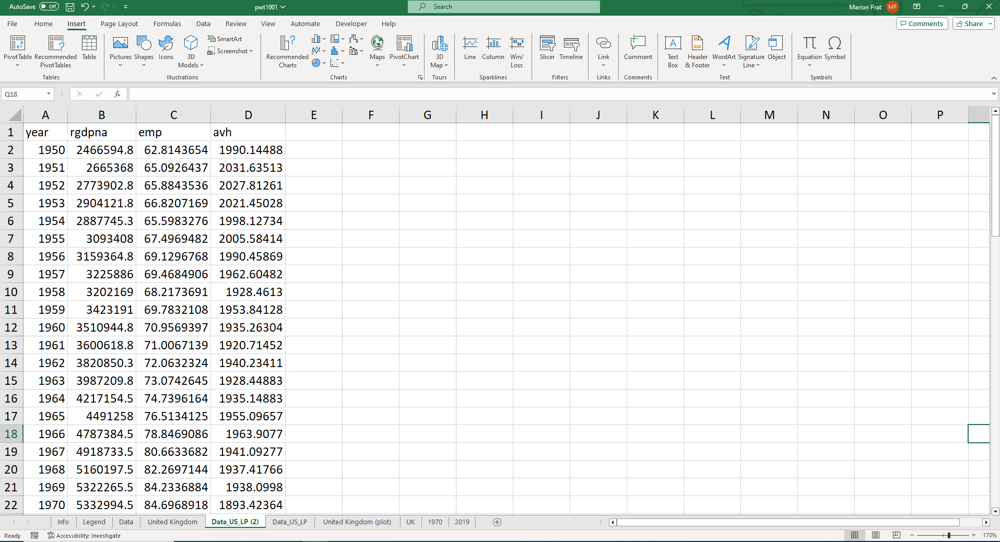
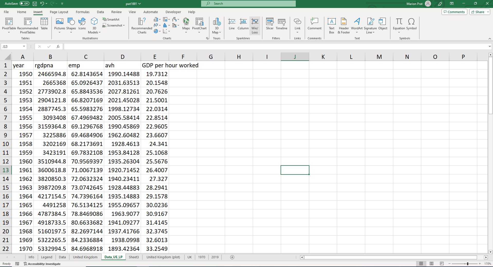
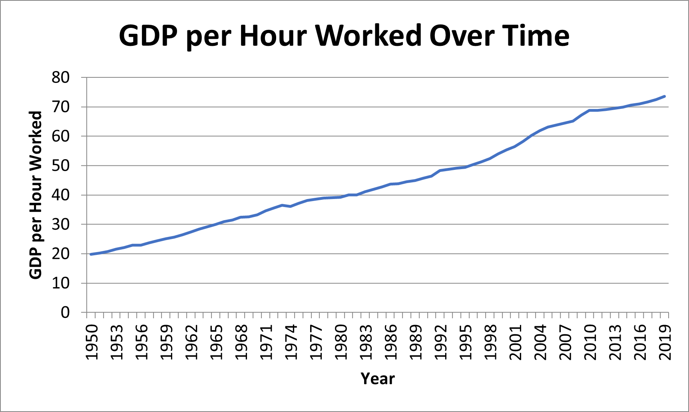
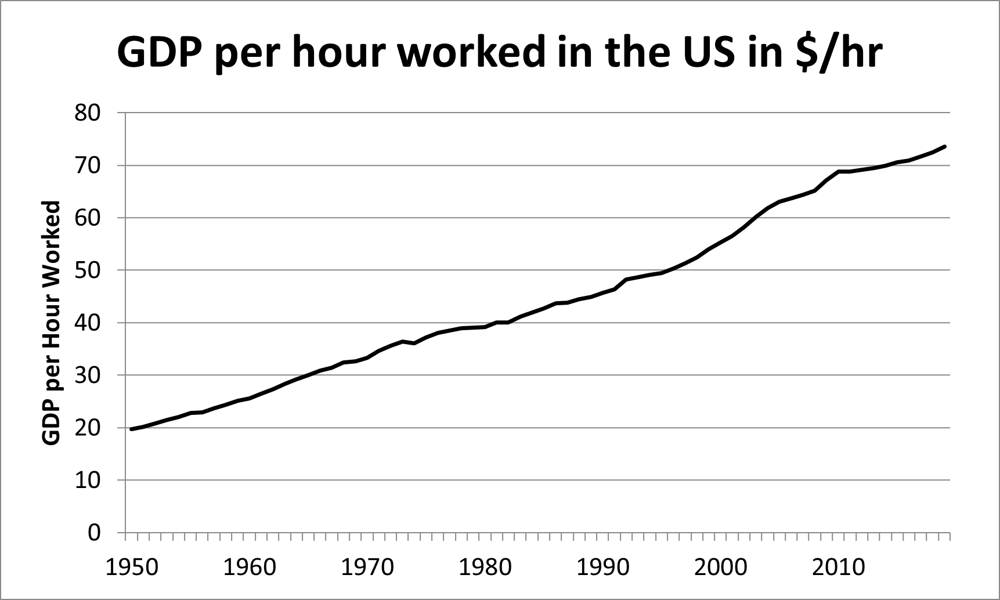

Chapter 7 Using AI tools with Excel
Many AI tools are embedded into Excel. We have already used some of these features in previous chapters. When you create a new variable in a new column using a formula, Excel will use it as an example to write the formula in all subsequent rows in the same column and automatically update as the data changes (“Formula by Example”). Similarly, when creating a chart, Excel proposes a selection of charts that are the most likely to be relevant in “Recommended charts”.
In this chapter, we will present how a specific category of AI tools called Large Language Models (LLM) can be used to 1) write VBA code to perform tasks in Excel and 2) perform tasks directly in Excel using Microsoft Copilot.
The key messages are:
- There is a code behind every task performed in Excel and AI tools work by transforming prompts into code.
- Whether you are asking AI tools to write code or to perform a task directly, the main difficulty is to write a prompt that will get the desired task done.
This chapter was written in March 2024. By the time you read this, AI tools might have become more efficient at performing the tasks asked of them here.
7.1 What are Large Language Model (LLM)?
Go to Microsoft Copilot or ChatGPT and write the following prompts:
Explain to me what is Microsoft Copilot / ChatGPT / Large language models
Explain to me how to use Excel VBA
7.2 What is Excel VBA?
VBA stands for Visual Basic for Applications. It is a programming tool that can be used to perform operations in Excel (and other office programs). Most operations performed in Excel can be programmed in VBA instead of being performed manually as exemplified in the previous chapters.
However, it does not mean that coding in Excel is the most efficient or appropriate method! It is mostly useful when you have to do repetitive tasks, in which case it may be convenient to automate them using code. For example, you might want to create the plot of GDP per capita for multiple countries using the same format and style so that the plots are easily comparable.
It is now possible to ask Microsoft Copilot to perform simple tasks in Excel. The next section shows you what is happening behind the scene when you are asking Copilot to perform simple tasks in Excel.
7.3 Using AI to write Excel VBA code
I am using this Excel sheet entitled “Data_US_LP” containing US data on real GDP, the total number of employees and the average number of hours worked per employees between 1950 and 2019:

| Objective: I want to write a code in Excel VBA, which will create a new variable, GDP per hour worked, using the data in columns B, C and D and plot it against time using the dates in column A. |
In here I am using Microsoft Copilot, but the same procedure can be done using ChatGPT or other AI tools. I write the following prompt for Copilot:
Prompt
I am using an Excel Spreadsheet entitled "Data_US_LP" with Year in column A, Real GDP in column B, Number of employees in column C and Average number of hours worked per employee in column D. Can you write a code in Excel VBA to construct a new variable entitled GDP per hour worked in column E?
Reply (Copilot)
Sub CalculateGDPPerHourWorked()
Dim ws As Worksheet
Dim LastRow As Long
Dim i As Long
' Set the worksheet
Set ws = ThisWorkbook.Sheets("Data_US_LP")
' Find the last row of data
LastRow = ws.Cells(ws.Rows.Count, "A").End(xlUp).Row
' Loop through each row
For i = 2 To LastRow
' Calculate GDP per hour worked
ws.Cells(i, "E").Value = ws.Cells(i, "B").Value / (ws.Cells(i, "C").Value * ws.Cells(i, "D").Value)
Next i
' Set column E header
ws.Cells(1, "E").Value = "GDP per hour worked"
End Sub
What is this VBA code doing?
This VBA code is a Sub procedure, a series of statements enclosed by “Sub” and “End Sub” that performs actions. Here it creates a new variable in column E but below we will see that a sub may also be used to create plots. It is possible to follow what the code is doing:
- Define the dimension of the objects it is going to work with
- Define which Excel sheet it is going to use (“Data_US_LP”)
- Calculate the number of rows of data in this Excel sheet
- Define a loop to calculate the value of the new variable in each row
- Write the name for the new variable in the first row (“GDP per hour worked”)
How to run an Excel VBA code in Excel:
- Go to your Excel spreadsheet entitled “Data_US-LP”
- Press
Alt + F11. This should open the VBA. - Go to
Insertand selectModule. This opens a blank script (module) - Copy the code into the blank script and close the VBA.
- In the Excel spreadsheet, press
Alt + F8. - Select “CalculateGDPPerHourWorked” and press
Run
Result (Copilot)

The code instructed Excel to create a new variable GDP per hour worked in column E using the appropriate formula, ie by divided real GDP (column B) by the total number of hours worked, which the product of the number of employees (column C) and the average number of hours worked (column D).
Prompt
Now can you write an Excel VBA code to create a line plot or a time series plot of GDP per hour worked using Year to label the x-axis. Do not plot Year alongside GDP per hour worked and remove the legend
Reply (Copilot)
Sub PlotGDPperHour()
Dim ws As Worksheet
Dim LastRow As Long
Dim ChartObj As ChartObject
Dim Chart As Chart
' Set the worksheet
Set ws = ThisWorkbook.Sheets("Data_US_LP")
' Find the last row of data
LastRow = ws.Cells(ws.Rows.Count, "A").End(xlUp).Row
' Add a chart object
Set ChartObj = ws.ChartObjects.Add(Left:=ws.Cells(1, "G").Left, Width:=375, Top:=ws.Cells(1, "G").Top, Height:=225)
' Set the chart
Set Chart = ChartObj.Chart
' Set the data source
Chart.SetSourceData Source:=ws.Range(ws.Cells(2, "E"), ws.Cells(LastRow, "E"))
' Set the chart type
Chart.ChartType = xlLine
' Set the x-axis labels
Chart.Axes(xlCategory).CategoryNames = ws.Range(ws.Cells(2, "A"), ws.Cells(LastRow, "A"))
' Set the chart title
Chart.HasTitle = True
Chart.ChartTitle.Text = "GDP per Hour Worked Over Time"
' Set the x-axis title
Chart.Axes(xlCategory, xlPrimary).HasTitle = True
Chart.Axes(xlCategory, xlPrimary).AxisTitle.Text = "Year"
' Set the y-axis title
Chart.Axes(xlValue, xlPrimary).HasTitle = True
Chart.Axes(xlValue, xlPrimary).AxisTitle.Text = "GDP per Hour Worked"
' Remove the legend
Chart.HasLegend = False
End Sub
To run the code in Excel, follow the same steps as before. Here is the plot we obtain by running this code.

Next, I ask Copilot to make some changes to the code to improve the appearance of the plot: change the title of the plot because it is a bit vague, change the colour of the line, increase the interval of time between dates, …
Prompt
Is it possible to modify this code so that the interval between the labels on the x-axis is ten units, the line colour is black, the x-axis title is removed and the chart title is "GDP per hour worked in the US in $/hr"?
Reply (Copilot)
Sub PlotGDPperHour()
Dim ws As Worksheet
Dim LastRow As Long
Dim ChartObj As ChartObject
Dim Chart As Chart
Dim Series As Series
' Set the worksheet
Set ws = ThisWorkbook.Sheets("Data_US_LP")
' Find the last row of data
LastRow = ws.Cells(ws.Rows.Count, "A").End(xlUp).Row
' Add a chart object
Set ChartObj = ws.ChartObjects.Add(Left:=ws.Cells(1, "G").Left, Width:=375, Top:=ws.Cells(1, "G").Top, Height:=225)
' Set the chart
Set Chart = ChartObj.Chart
' Set the data source
Chart.SetSourceData Source:=ws.Range(ws.Cells(2, "E"), ws.Cells(LastRow, "E"))
' Set the chart type
Chart.ChartType = xlLine
' Set the x-axis labels
Chart.Axes(xlCategory).CategoryNames = ws.Range(ws.Cells(2, "A"), ws.Cells(LastRow, "A"))
' Set the x-axis label interval
Chart.Axes(xlCategory).TickLabelSpacing = 10
' Remove the x-axis title
Chart.Axes(xlCategory, xlPrimary).HasTitle = False
' Set the chart title
Chart.HasTitle = True
Chart.ChartTitle.Text = "GDP per hour worked in the US in $/hr"
' Set the y-axis title
Chart.Axes(xlValue, xlPrimary).HasTitle = True
Chart.Axes(xlValue, xlPrimary).AxisTitle.Text = "GDP per Hour Worked"
' Remove the legend
Chart.HasLegend = False
' Set the line color to black
Set Series = Chart.SeriesCollection(1)
Series.Format.Line.ForeColor.RGB = RGB(0, 0, 0)
End Sub

Remarks:
- What Copilot did well: it correctly calculated GDP per hour worked given the description of the three variables variables used to calculate it (Real GDP, number of employees and average number of hours worked per employees)
- What Copilot did less well: I have not shown the intermediate steps but it struggled to create a line plot that does not represent “Year” alongside GDP per hour worked but use it to label the x-axis. In other words, it initially produced a clearly nonsensical plot. AI tools already embedded into Excel such as “Recommended Charts” are better in this sense. The main reason it took me some time to obtain the correct code is probably that I unable to describe precisely what I wanted to achieve.
7.4 Using Copilot in Excel
In this section, we will see how Copilot can be used within Excel to perform the same tasks as in the previous section. To perform these operations, you will need to use a computer with Copilot for Microsoft 365 installed in it.
This feature has limited applications as of now but is likely to improve in the near future.